Mon RPG Rogue Like
Correctif de Bug:
Dernière nouveautés:
Modifications des tuiles Plaines Magiques:
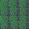 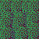 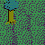
Ajout de nouveaux monstres:
Bandit:
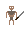
Centaure:
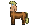
Golem d'argile:
Earth golem:
Elfe:
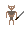
Élémentaire de feu:
Golem de feu:
Renard:
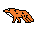
Goblin:
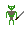
Ifrit:
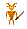
Golem de lave:
Licorne:
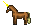
Minotaure:
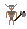
Paysant:
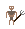
Pixie:
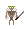
Être sylvain:
Troll:
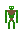
Bandit:
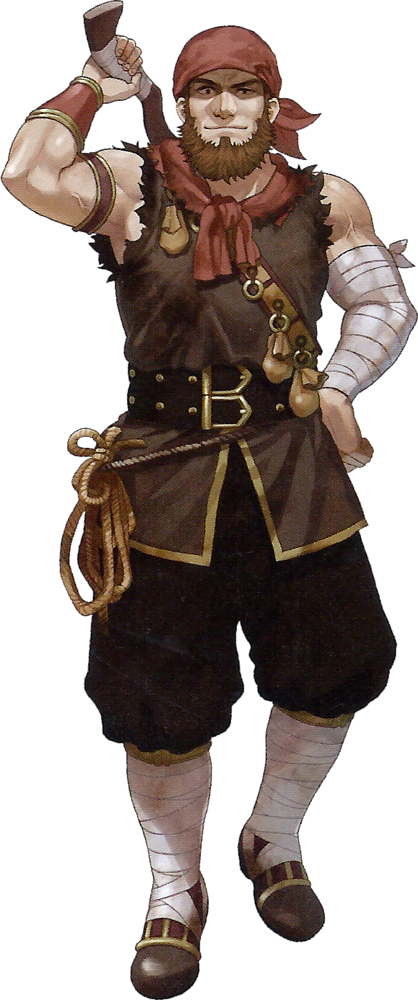
Centaure:
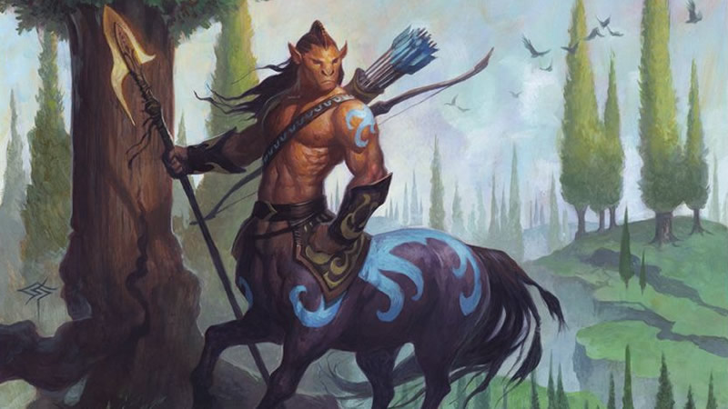
Golem d'argile:
Earth golem:
Elfe:
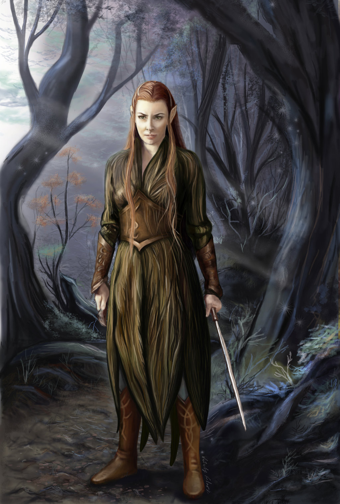
Élémentaire de feu:
Golem de feu:
Renard:
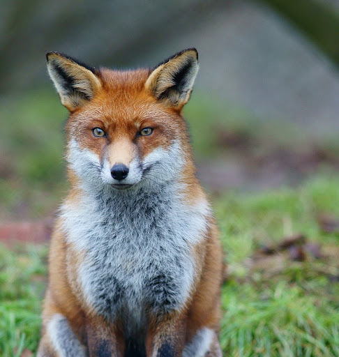
Goblin:
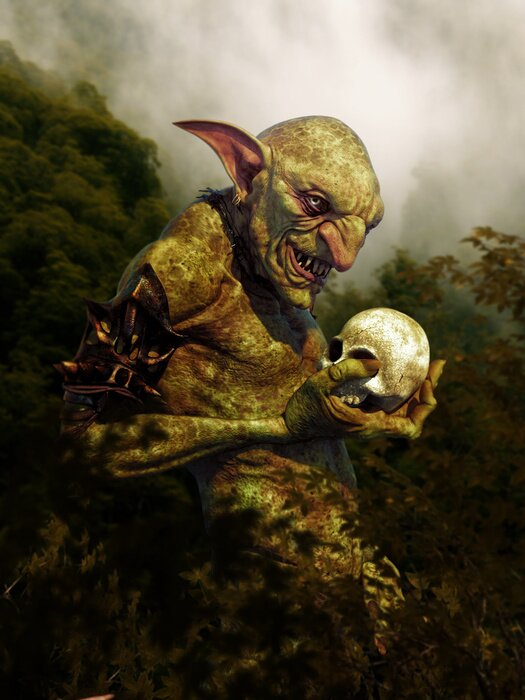
Ifrit:
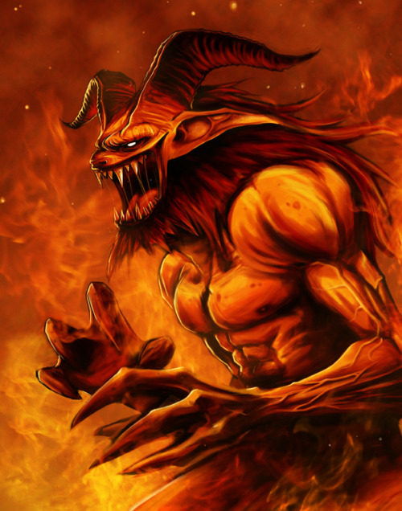
Golem de lave:
Licorne:
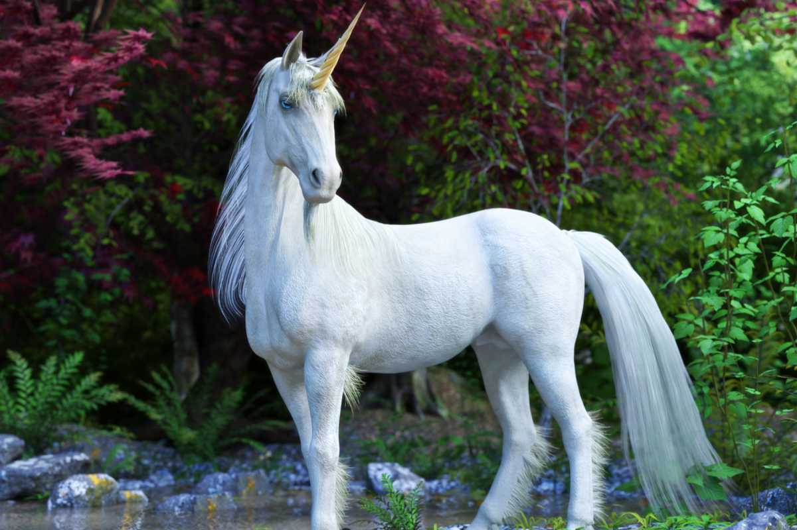
Minotaure:
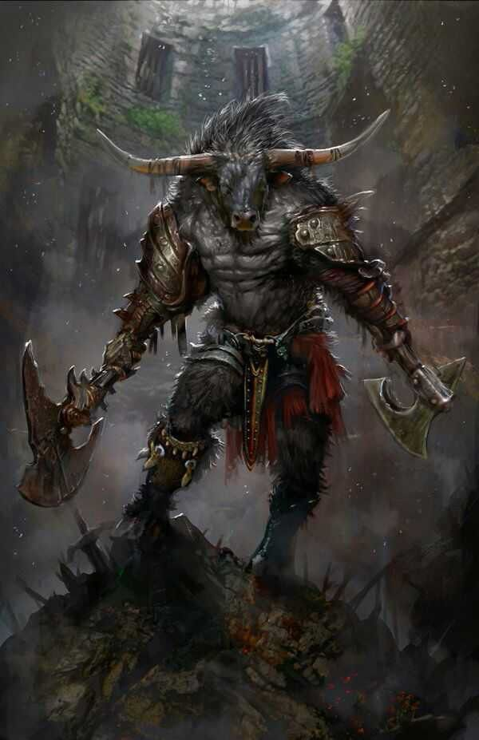
Paysant:
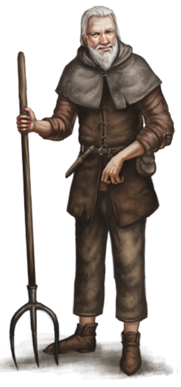
Pixie:
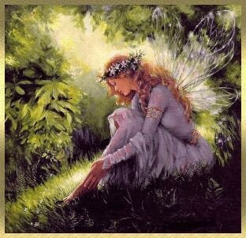
Être sylvain:
Troll:
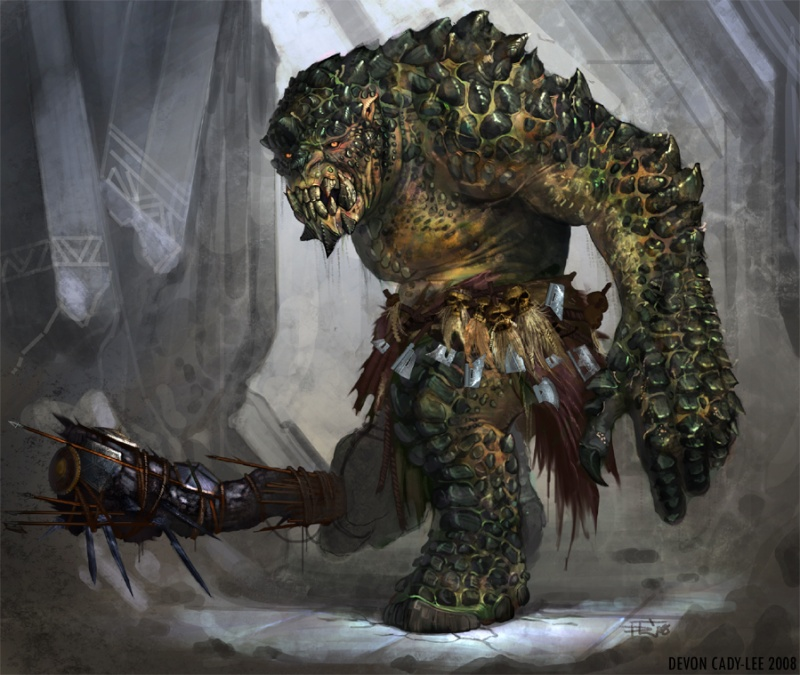
Quelques screens du jeu:
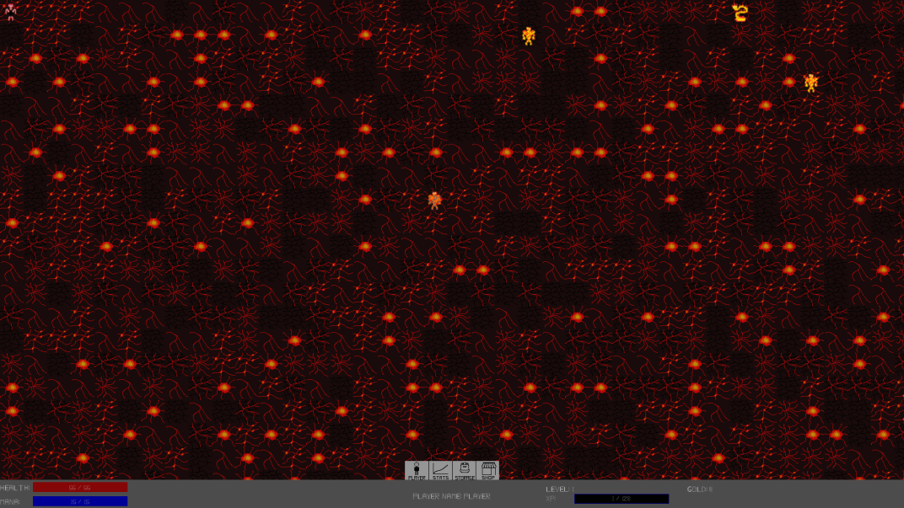 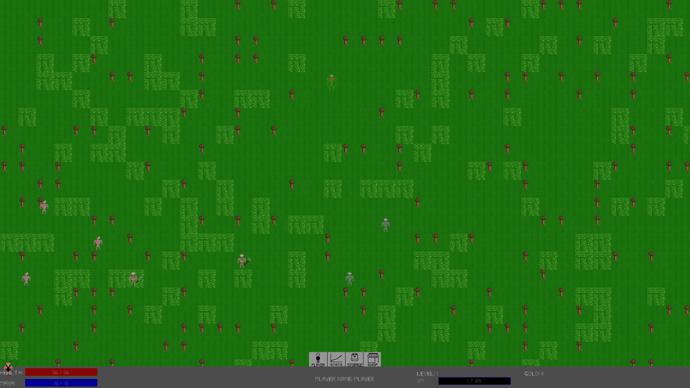 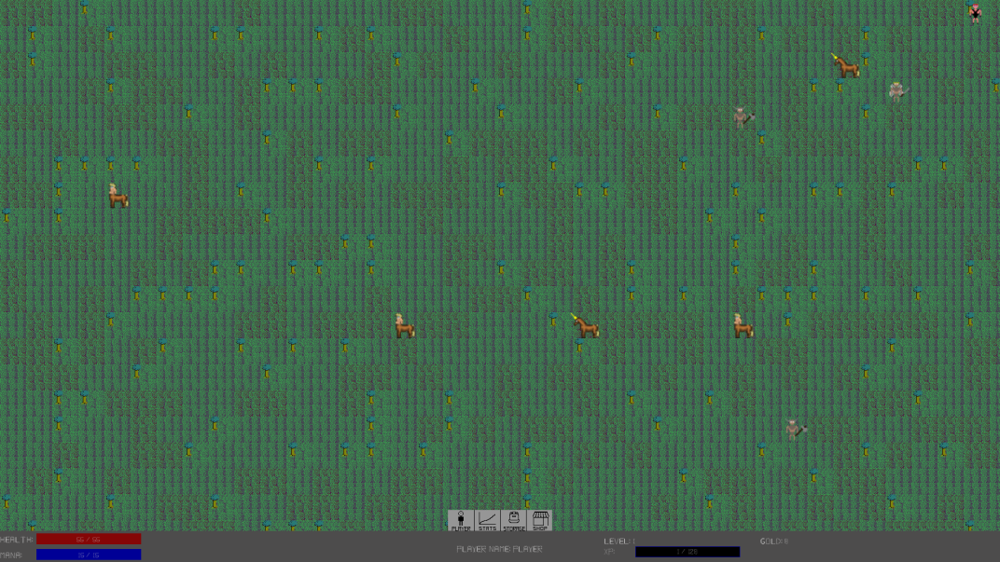